Backlog Nr. 182 · Fehlerfund 2 aus AP1 der Mockup-Runde 9c (Web 19.4.0, 13.09.2026) · Vorgelegt zur Freigabe: F-MR-14
Kein Nachbau. Alle sechs Bilder auf dieser Seite sind Bildschirmfotos der laufenden Anwendung (lokale Installation, Web 19.4.0, Chromium 141). Die drei Wege sind in die echte Vorschautabelle eingesetzt und darin gemessen worden — nicht gezeichnet. Die Importdatei stammt aus dem Referenz-Export und löst alle drei Fälle aus: vorhandener Diensttag mit abweichender Besatzung, neuer Diensttag, eine Zeile ohne verwertbares Datum.
AP1 hat der Kopfzeile einer Tagesgruppe eine Regel gegeben und die Warnung „abweichende
Crew" zu einer .plakette-orange gemacht — der Form, mit der die Anwendung überall
„Zustand, der Aufmerksamkeit will" zeigt. Beim Prüfen im Browser zeigte sich: Man sieht
sie nicht.
Der Gruppenkopf ist ein <tr><td colspan> in derselben Tabelle
wie die Datenzeilen. Damit ist er so breit wie die Tabelle — nicht wie das
Sichtfenster. Die Vorschau hat vierzehn Spalten; gemessen sind das 2653 px Kopfbreite gegen
342 px sichtbare Breite am Handy. Alles nach dem Datum liegt außerhalb, und der
flex-wrap der Zeile greift nie, weil in einer 2653 px breiten Zeile nichts
umbricht.
| Weg | Fenster | Kopfbreite | sichtbar | Höhe der Kopfzeile | Plakette sichtbar ohne Scrollen | Tabellen | Spalten fluchten |
|---|---|---|---|---|---|---|---|
| A Ist | 400 px | 2653 px | 342 px | 44 px | nein | 1 | ja |
| A Ist | 1280 px | 2653 px | 954 px | 40 px | nein | 1 | ja |
| B geheftet | 400 px | 342 px | 342 px | 231 px | ja | 1 | ja |
| B geheftet | 1280 px | 954 px | 954 px | 122 px | ja | 1 | ja |
| C je Gruppe eine Tabelle | 400 px | 342 px | 342 px | 233 px | ja | 3 | nein — 1 von 14 |
| C je Gruppe eine Tabelle | 1280 px | 954 px | 954 px | 124 px | ja | 3 | nein — 1 von 14 |
Waagerechter Überlauf der Seite: 0 in allen sechs Messungen. Konsolenfehler: keine in allen drei Wegen. „Spalten fluchten" vergleicht die Breite jeder der vierzehn Spalten zwischen den Gruppen — bei drei Gruppen und fünf Zeilen weicht in Weg C bereits eine ab; mit sechzehn Diensttagen wären es mehr.
Der Zustand, wie ihn Web 19.4.0 ausliefert. Kostet nichts und bricht nichts. Der Baustein
taugt dann nur in schmalen Tabellen — genau so steht er seit Web 19.4.0 in
Design.md 9.34 unter „Was sie nicht kann".
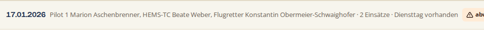
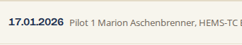
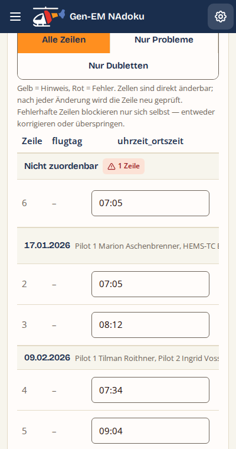
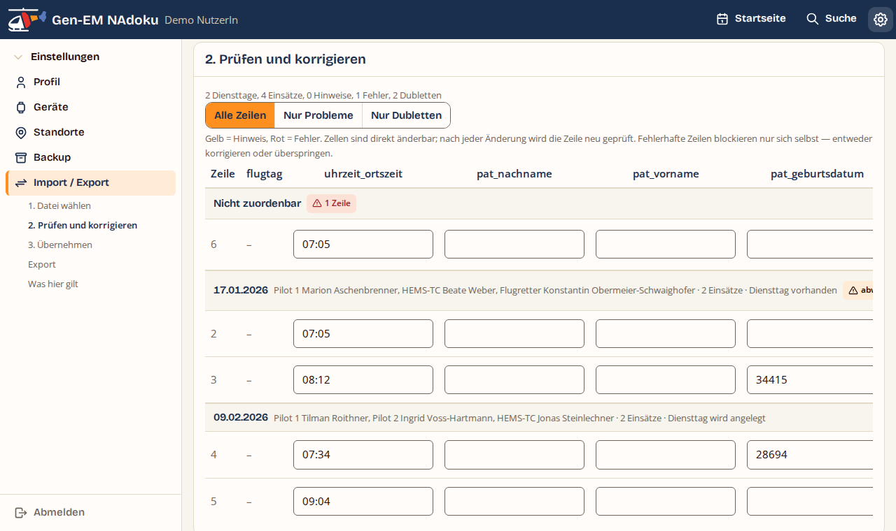
Die Fläche (das <td>) bleibt so breit wie die Tabelle — das Band
hört also nicht auf halber Strecke auf. Der Inhalt darin bekommt
position:sticky; left:0 und die Breite des Rollbereichs; er steht damit immer dort,
wo gelesen wird, und die Datenzeilen scrollen darunter durch. Erst dadurch greift auch der
Umbruch, den das Konzept am Handy erwartet hat.
width:100% hieße also 2653 px). Es braucht eine gemessene Zahl: ein
ResizeObserver auf .tabelle-scroll, der ein Custom Property
--sicht setzt. Vier Zeilen JavaScript in import_ui.js, keine
Bibliothek. Gemessen mit genau diesem Aufbau.text-overflow:ellipsis) — das wäre dann eine eigene Frage.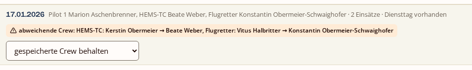
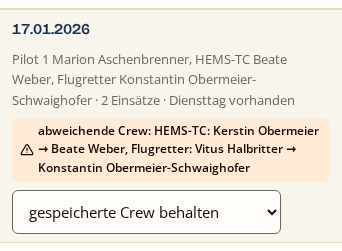
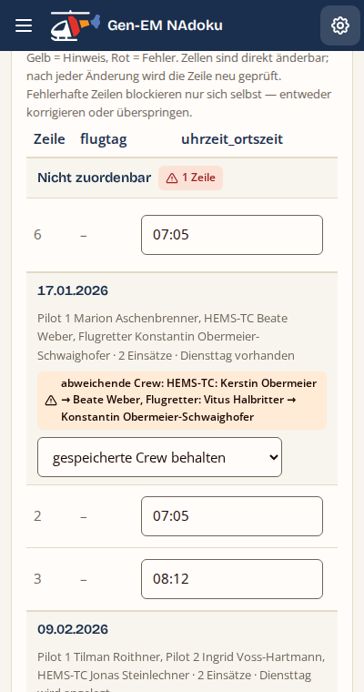
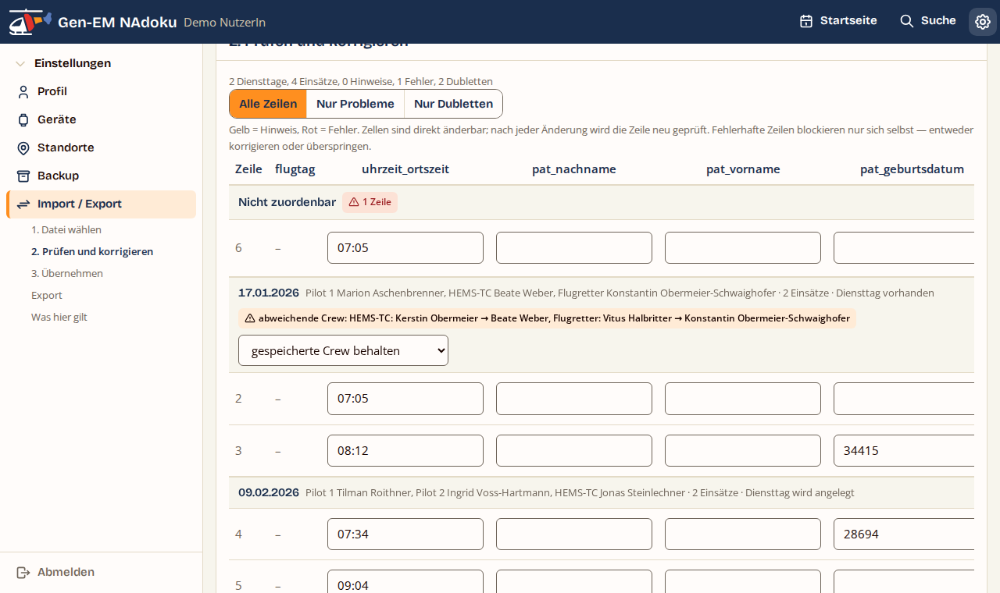
Jede Tagesgruppe bekommt eine eigene <table> in einem eigenen
Rollbereich; die Kopfzeile steht darüber und ist damit von Haus aus so breit wie der
Inhaltsbereich. Kein sticky, keine gemessene Breite, kein JavaScript.
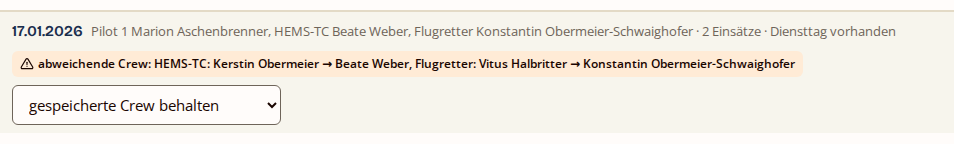
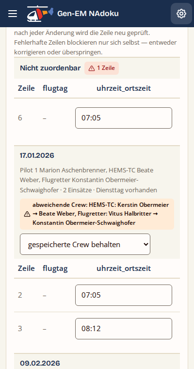
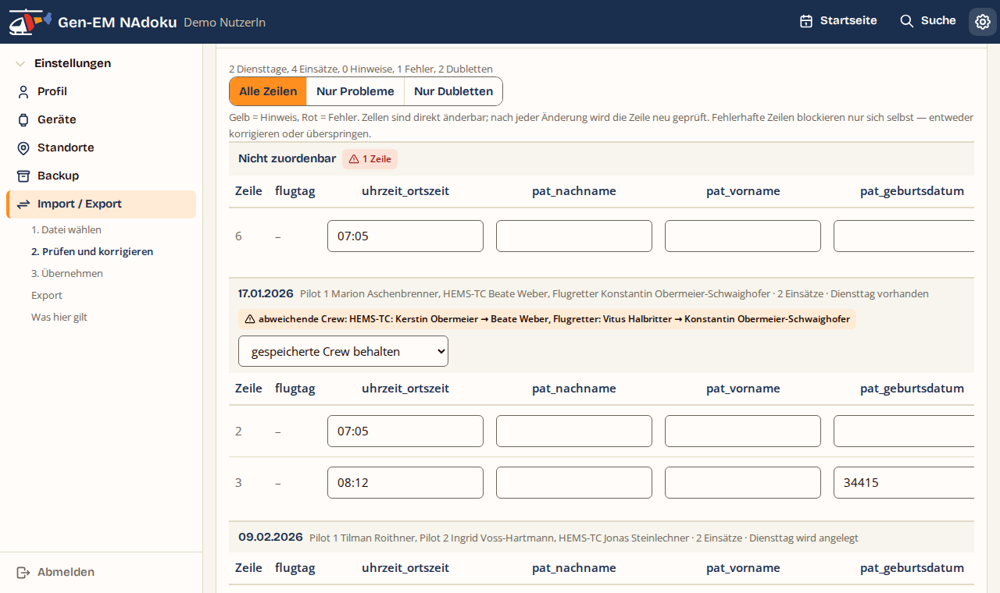
F-MR-14 — Welcher Weg?
A so lassen (Nr. 182 bleibt offen im Backlog) · B Kopfzeile heften, mit vier Zeilen JavaScript für die gemessene Breite · C je Gruppe eine eigene Tabelle.
Empfehlung: B. Es macht die Warnung
sichtbar, ohne die eine Eigenschaft aufzugeben, für die die gemeinsame Tabelle da ist — dass
die Spalten über alle Gruppen fluchten. Der Preis ist eine gemessene Zahl in JavaScript; das
ist weniger, als es klingt, und die Anwendung tut Vergleichbares in
map_fullscreen.js nach jedem Umschalten schon.
Nebenfrage, nur bei B: Soll die Besatzungszeile am Handy gekürzt werden (eine Zeile, Auslassungszeichen), damit der Kopf niedriger bleibt? Ohne Kürzung sind es bei zwei abweichenden Rollen 231 px, bei einer rund 130.
tools/referenzdatensatz/referenz/ umgebaut, drei Gruppen, fünf Zeilen ·
Schriften aus server/assets/fonts/, keine fremde Quelle.